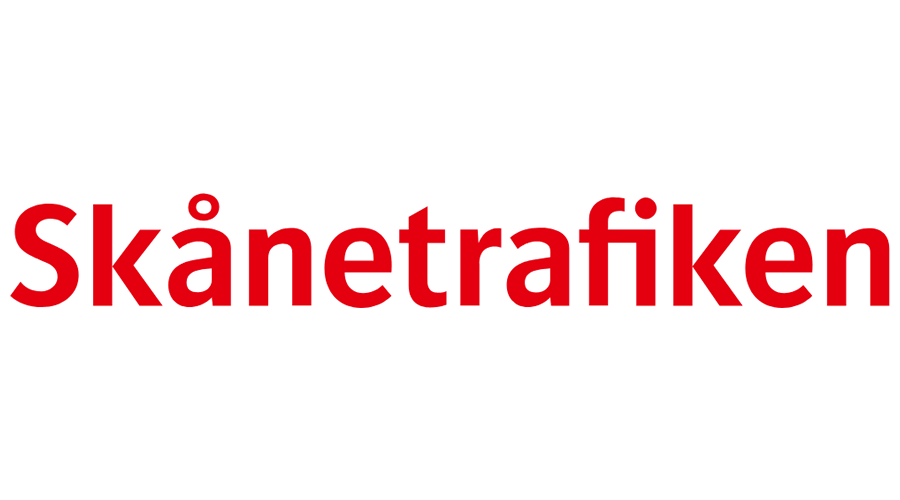
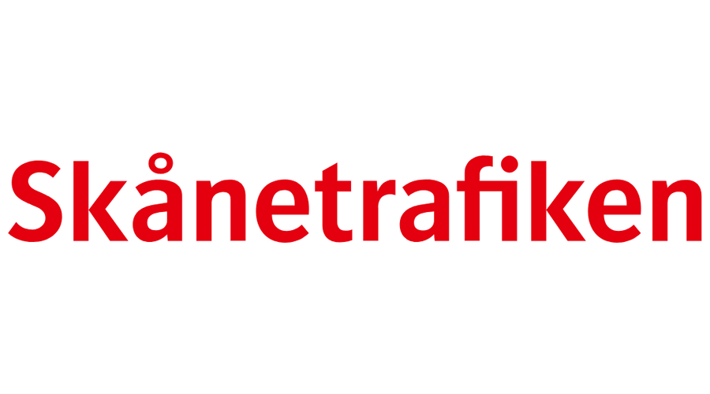

OTP Developer and Product Owner Days 2024 Berlin
October 7-11 2024 (developers), October 8-9 2024 (POs)
The OTP developers are meeting in October in Berlin to discuss technical topics and to socialise. Even though this mini-conference is focussed on technical details everybody is welcome and just listening in is totally fine.
The OTP Product Owners are meeting for two days to kick-start the process of increased effectiveness in the PO team through facilitated discussions on purpose and common goals, clarifications of expectations, and a way of working within the OTP community.
The event is free.
Location
Adesso Berlin
Prinzenstraße 34
10969 Berlin
Germany
When you arrive at Prinzenstraße 34, ignore the regular door and walk to the large gate to the right of the building, ring the bell for the Adesso office. Then, walk through the courtyard and take a slight right.
Who will be there?
The main participants are developers who are already familiar with OTP’s internals.
Product owners from active participants and users of OTP are welcome.
Registration
If you want to join the developer week, please complete the registration form.
If you want to join the PO days, please complete the registration form.
Schedule
The schedule is available here..
Getting around the city
You can buy public transport tickets from the official BVG Tickets App as well as the route planning app BVG Fahrinfo (sadly not OTP-based). Ticket machines are also available at train and subway stations but not bus stops. Daily, weekly or tourist-oriented passes are available.
Berlin is flat and therefore cycling is a popular option. Some hotels offer a bike rental service. There are also the bike rental apps Call A Bike and Nextbike.
Social events
There will dinners organised by Leonard on Monday, Tuesday and Friday night. Of course attendees are free to go for dinner in any group(s) they wish.
If people are still in town on Saturday, there will be a longer trip, for example going to Sanssoussi Gardens or a sightseeing boat trip.
Partners
 
